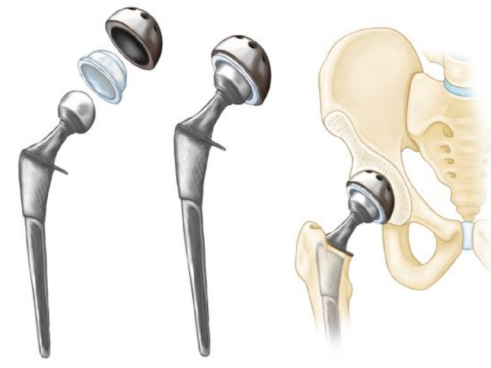
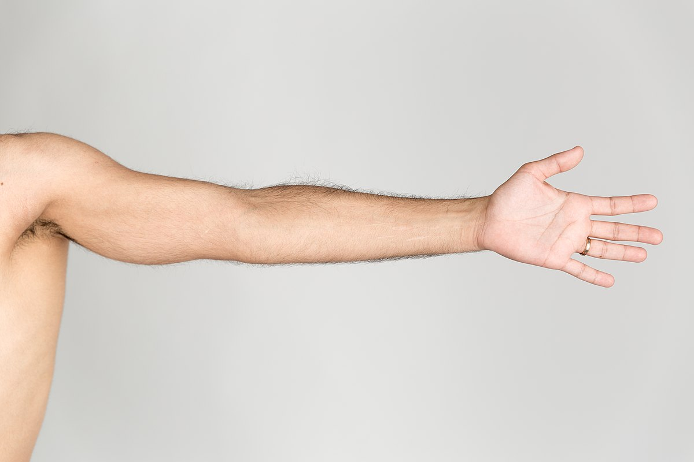
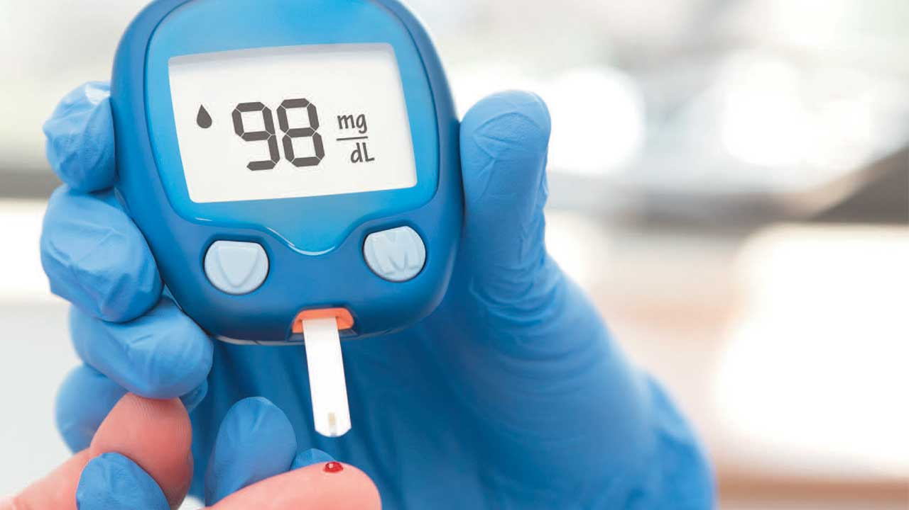
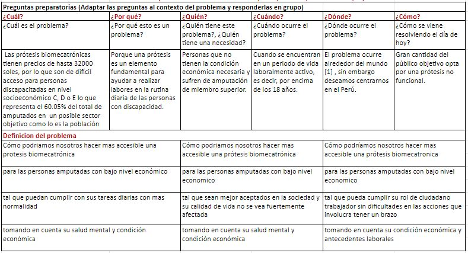
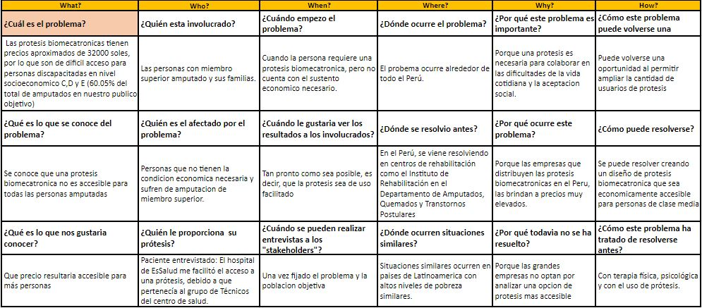
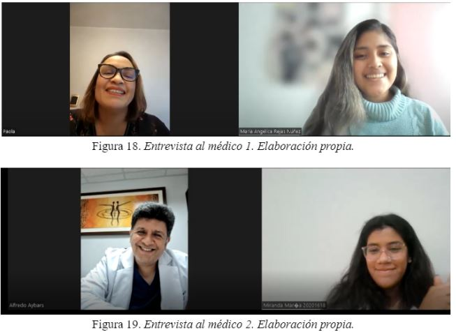
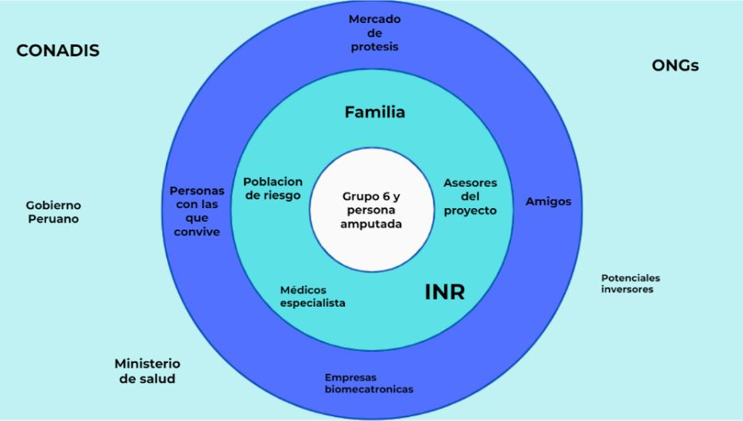
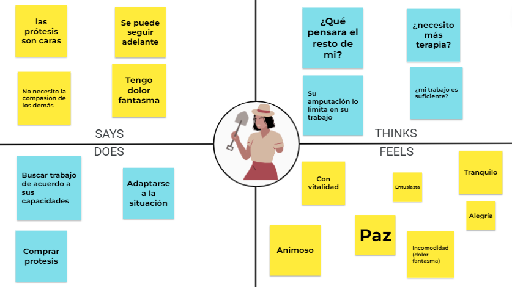
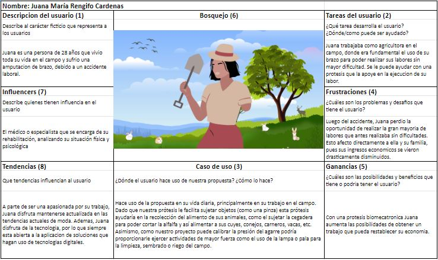
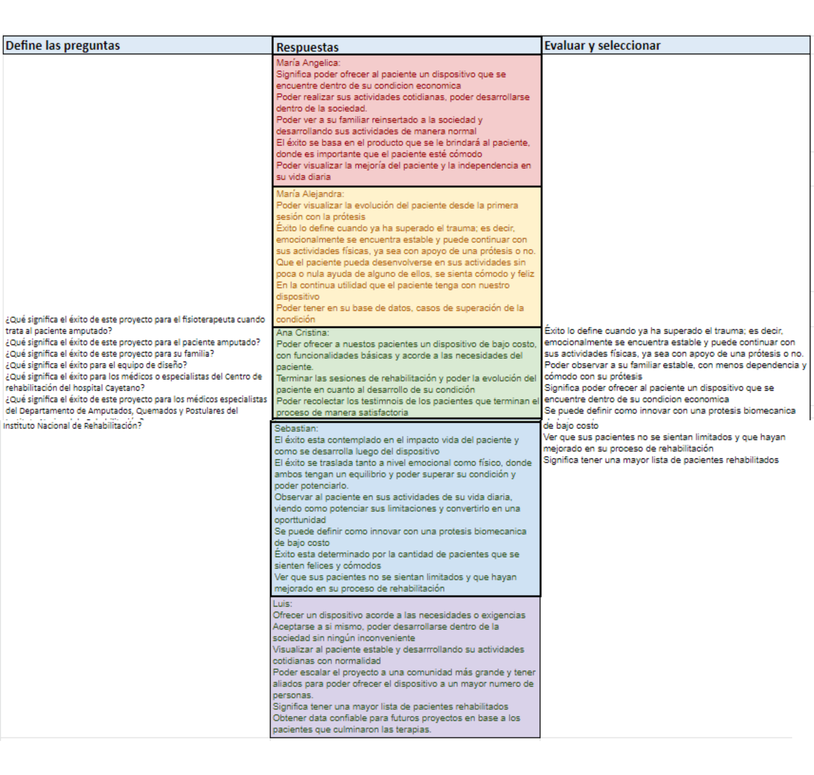

Se analizan algunas definiciones básicas para analizar los impactos que derivan del posible problema. Posteriormente se describen los mismos usando estadísticas.
PLANTEAR PROBLEMA
Utilizando herramientas como tablas, se busca entender, observar y definir el problema para poder tenerlo claro desde esta etapa para otras posteriores.
Marco Teórico
Definiciones básicas
Se profundiza en conceptos necesarios de comprender para el entendimiento del problema y una futura propuesta de solución.
Luego de analizar los impactos relacionados a la rehabilitación de los pacientes con amputaciones de miembro superior, a continuación el equipi de trabajo presenta un problema inicial.
Después de haber definido el problema, se procede con la observación. Esto será útil para aprender tanto como sea posible del usuario y sus necesidades, tomando como referencia entrevistas realizadas.
Luego de haber entendido y observado el problema se sigue con la definición del problema. Esto es importante pues será empleado como el punto de partida en la búsqueda de la solución.
Es un procedimiento quirúrgico, el cual puede ser de distintos tipos, tales como remoción, extirpación o resección de toda o parcial extremidad.Las amputaciones se seccionan tanto en la extremidad inferior como superior, a su vez en cada una tiene un nivel, en el caso de las superiores, amputación de los dedos, de la muñeca, del antebrazo, del brazo, del hombro, y desarticulación del codo. [1]
Prótesis en adultos

Es un sustituto artificial de alguna parte del cuerpo[2] permite al paciente recuperar ciertas funciones que había perdido por una amputación parcial o total. [3] Una prótesis ideal es aquella que es adaptable al paciente, pues cada persona cuenta con características distintas, al ser personalizada, el paciente puede desempeñar sus actividades. Existen prótesis para cada parte de cuerpo.
Biomecánica del brazo

Los movimientos básicos y esenciales del brazo se producen en la articulación del codo, estos son los movimientos de flexo-extensión y prono-supinación, los músculos flexores son el braquial anterior, el supinador largo y el bíceps braquial..Por otro lado, la importancia de la mano radica en su función de pinza para el ejercicio de las actividades diarias.[4]
Definiciones básicas
Técnicas no invasivas

Son técnicas las cuales no requieren contacto ni insertar alguna herramienta o instrumento a través de la piel o en una abertura corporal. [6]. Una de ellas es la electroterapia analgésica, la cual genera corrientes eléctricas que se transmiten a través de electrodos situados en la superficiede la piel para estimulación muscular en las partes amputadas. [7]
Discapacidad
Limitaci+on que dificulta el desarrollor físico, mental, intelectual o sensorial de una perosna, se convierte en una barrera para una participación activa en la sociedad.[8] Es importante resaltae la tasa de mortalidad en los desastres o emergencias, donde las personas con discapacidad tienen de 2 a 4 veces más que una sin discapacidad.[12]
Accidente laboral
Las lesiones producidas en el lugar de trabajo o durante la ejecución de sus actividades laborales fueron causadas por una lesión traumática (59,2%). De este grupo de estudio el 63,9% tuvo que dejar su actividad laboral por presentar dificultades en las actividades que realizaba. Respecto a la parte más afectada fueron los miembros superiores con un 49,07%, al igual en los miembros inferiores se tuvo un 48,15%. [10]
La población económicamente activa del Perú en el año 2017 ascendía a 17 millones 215 mil personas. De este total, el 70,6% se encuentra en un grupo de edad de entre 25 a 59 años. [12]
La mayoría de casos de amputaciones por accidentes laborales representa una cifra de 40,7% en la población que trabaja en el rango de 21 a 30 años de edad, de los cuales un 63,9% no realizará ninguna actividad laboral a raíz de su amputación. [13]
Esto genera, por caso individual un promedio de 14.5 años de vida productiva potencialmente perdidos, siendo un total de 1568,5 años en total [8]
Según CPI research [14] el 60.5% de la población se encuentra en un nivel socioeconómico C, D o E, los cuales, dado al precio regular de una prótesis, el cual oscila dependiendo de la empresa, pero la empresa peruana KYP Bioingeniería maneja precios aproximados de 32 000 soles, no se encontraría en condiciones de pagarla.
En síntesis, un aproximado de 137 259 personas con amputaciones no podrían adquirir una prótesis promedio en el mercado.
Impacto personal y social
El estrés postraumático es algo común en los pacientes que acaban de sufrir una amputación.
Sin embargo, esto se intensifica en el caso de los pacientes que deben amputarse producto de un accidente.
Según Zepeda et al, los adultos con amputación por enfermedad tienden a tener mayor resiliencia respecto a los adultos con resección de tipo traumática, estos obtienen su resiliencia con base al apoyo familiar.[23]
De este modo, el análisis de los estudios permite afirmar que el paciente amputado de larga evolución presenta un deterioro de los aspectos físicos de la percepción de calidad de vida y no presenta menoscabo en los aspectos de salud mental. [15]
Análisis de causas
Las amputaciones causadas a nivel de la extremidad superior suelen darse, en los adultos, como producto de un trauma, en un 75% [16]
A su vez, pero en menor proporción, también vemos que las amputaciones en la extremidad superior pueden darse como consecuencia de las anomalías congénitas, infecciones, tumores (sarcoma), enfermedades vasculares, quemaduras, trastornos neurológicos y neoplasias malignas. [17] [18]
En el 2010 se realizó un análisis a 108 peruanos para poder determinar la cantidad de personas que habían padecido de una lesión que le generó la pérdida de su extremidad superior
Se obtuvo que 41 resultaron afectadas por tener una actividad económica relacionada con industrias manufactureras (37.9%); 24 por transporte, almacenamiento y comunicaciones (22.2%); y 10 con agricultura, ganadería, caza y silvicultura (9.3%). [19]
Prevalencia en el Perú
Según el reporte de Enero del 2022 del Registro Nacional de la Persona con Discapacidad (RNPCD), se estima que, para el año 2022, la población con discapacidad en Perú aumentará hasta 1 millón 737 mil 865. [20]
Además, según el Boletín Estadístico del Módulo de Información de Discapacidad HIS-DIS del año 2015, del total de pacientes atendidos con deficiencias registradas, el 36,02% representa deficiencias músculo esqueléticas, categoría en la que entran las personas con amputaciones. [21]
Entonces, en el Perú habrá cerca de 625 979 personas con deficiencias músculo esqueléticas, tales como la amputación de miembros superiores.
Por otro lado, del total de personas con discapacidad inscritas en el RNPCD entre los años 2000 y 2022, 17,2% pertenece al grupo de edad de 18-29 y 19,1% al grupo de edad de 30-44 años. Sumando ambos se obtiene 36,3% que representa el mayor porcentaje de personas con discapacidades, por lo que, estableceremos el rango de edad de 18 a 44 como el de nuestro público objetivo. [22]
ENTENDER EL PROBLEMA




Mapa de interesados
OBSERVAR EL PROBLEMA

Mapa de empatía

Perfil del usuario

Definiendo el éxito
DEFINIENDO EL PROBLEMA
“ ¿Cómo podríamos nosotros diseñar un prototipo bio mecatrónico para personas amputadas de miembro superior y con bajos recursos, en el rango de edad de 18 a 44 años, tal que sea de utilidad para los aspectos de su vida diaria, tomando en cuenta que la solución sea de bajo costo y cumpla con los estándares de seguridad internacionales? ”